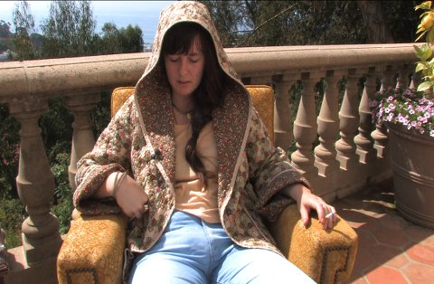

Anna McCarthy

Anna McCarthy * 1981 in München. Studium an der
Akademie der bildenden Künste München & Glasgow School of Art.
Sie arbeitet multidisziplinär, u.a. mit Video, Zeichnungen,
Performances und Musik. Ihre Video-Serie "Bored Rebels" zeigte
UNDERDOX 2013 in einer Werkschau.
www.annamccarthy.de
Ausstellungen (u.a.): Biennale Zeitgenössischer Kunst Konjic, Bosnien und Herzegowina Städtische Galerie im Lenbachhaus und Kunstbau – Kunstförderpreis Galerie der Künstler, München Städelschule Frankfurt – Cité des Arts, Paris – Kunstverein Leipzig Kunstverein Göttingen (alle 2016)
Fassbinder in LaLaLand
USA 2015 – Video, Sound 15'54''
Buch: Anna McCarthy – K: Antje Engelmann – Mit Anna
McCarthy, Udo Moll, Mathilde Bonnefoy, Cyrill Lachauer, Diana
Norris, Marius Lorenz u.a.
Im Auftrag der Fassbinder-Tage München 2015
Eine Frau bei Los Angeles gibt vor Rainer Werner Fassbinder zu
sein. Sie spricht Bayerisch mit leichten amerikanischem Akzent.
Anlässlich „ihres“ Geburtstages gibt sie zum ersten Mal seit 33
Jahren ein Interview. Das Video entstand in der Villa Aurora, in der
Lion Feuchtwanger im Exil war.
Das Mockumentary entstand anlässlich des 70. Geburtstags
Fassbinders. Mit einer Hommage an Douglas Sirks „All that Heavens
Allows“.